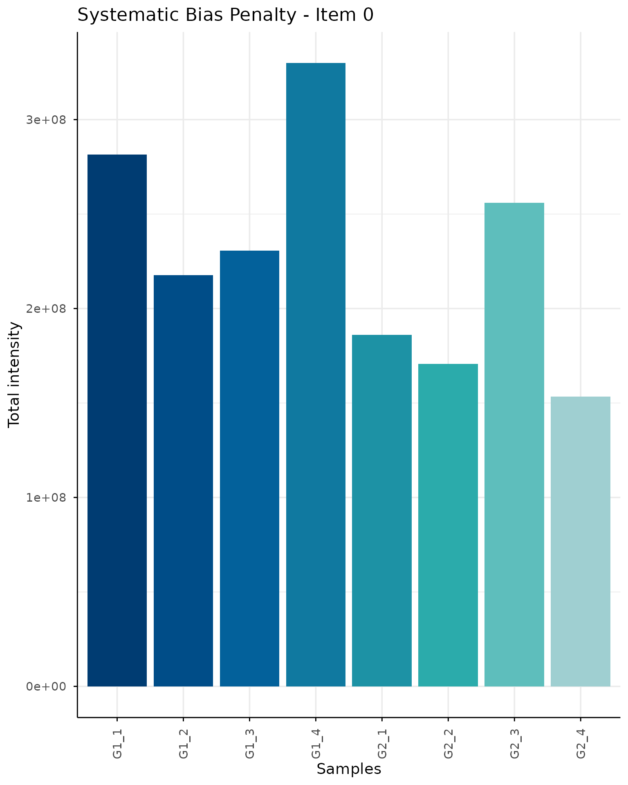
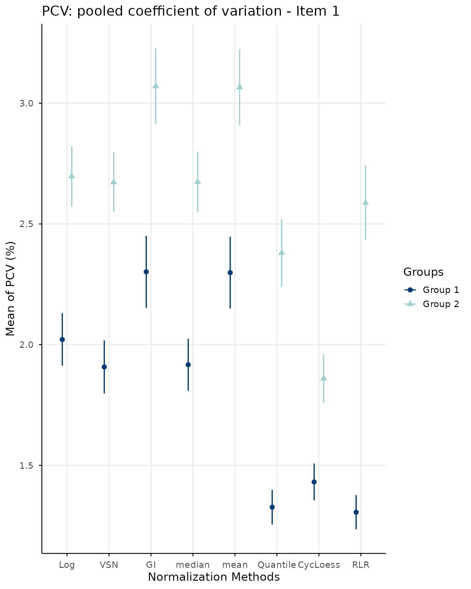
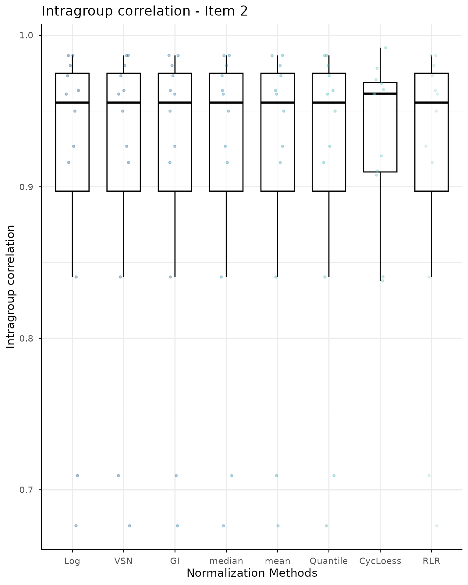
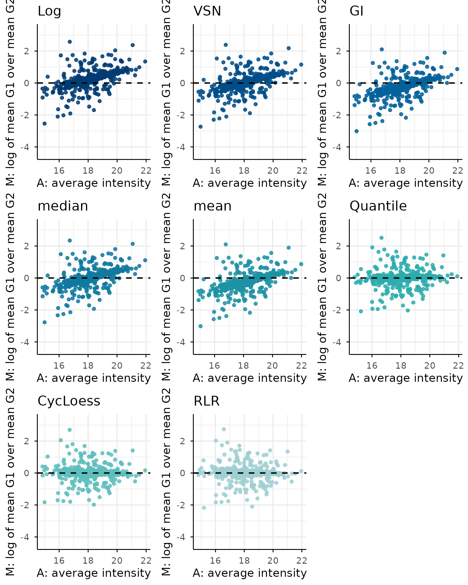
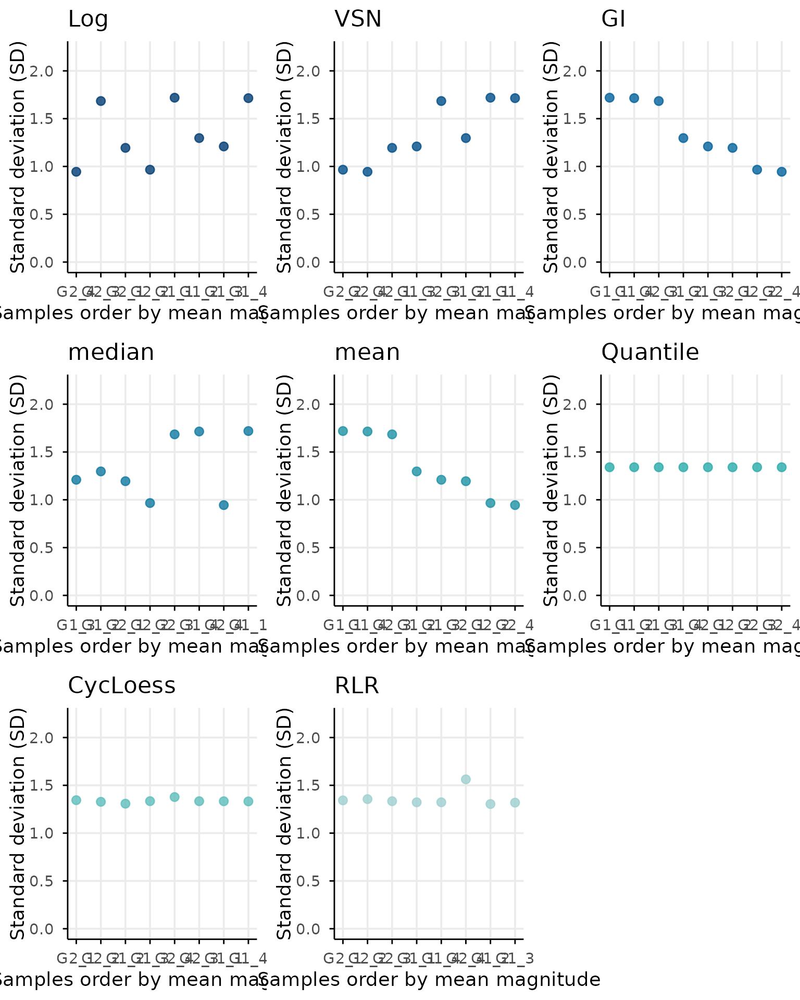
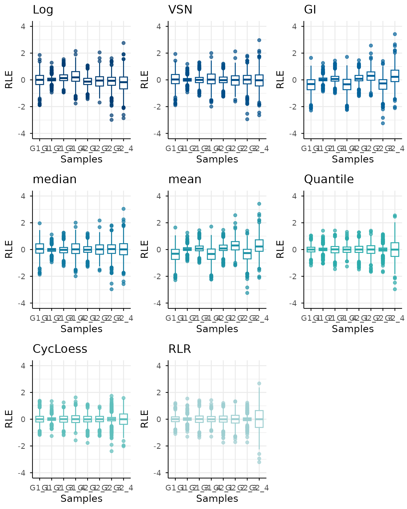
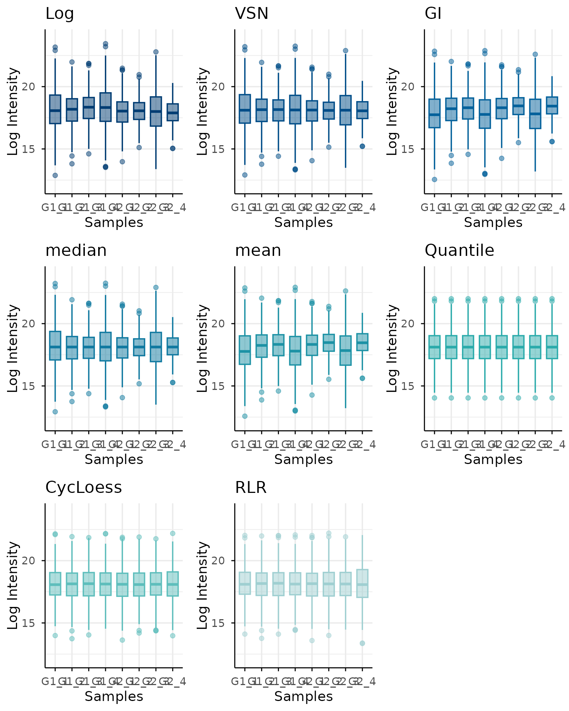

NormScore with SummarizedExperiment and NormalyzedDE
normScore-MorePackages.RmdIntroduction
SummarizedExperiment is a standard Bioconductor
container for storing high-dimensional molecular data together with
feature and sample metadata. A single object can contain several assays,
making it convenient for keeping the original data and multiple
normalized versions aligned.
This vignette illustrates how to:
- create a
SummarizedExperimentobject; - store several normalized matrices as assays;
- extract the matrices and sample groups required by
normScore; - evaluate the normalization methods;
- add the resulting scores back to the object metadata.
Required packages
The packages used only in this vignette should be included in the
Suggests field of the package DESCRIPTION
file:
Suggests:
BiocStyle,
knitr,
rmarkdown,
SummarizedExperiment
VignetteBuilder: knitrExample data
For illustration, we generate a small log-transformed abundance
matrix using simulateData function from
normScore data package.
Rows represent proteins and columns represent samples in logData and
rawData items from the output simData object.
simData <- simulateData(
nProteins = 500,
nPerGroup = 4,
sampleShiftSd = 0.12,
sampleShiftCap = 1,
sampleSdStrength = 1.2,
sampleSdRho = 0.3,
rhoWithin = 0.6,
rhoBetween = 0.3,
loadingSd = 0.45,
sigmaHi = 0.03,
sigmaLo = 0.4,
gammaSigma = 3.8,
kMnar = 1.6,
addMissing = FALSE,
seed = 456
)
rawData <- simData$rawDataBuild a SummarizedExperiment object
The original and normalized matrices are stored as separate assays.
Sample-level information is stored in colData, whereas
optional feature-level annotations can be stored in
rowData.
sampleData <- S4Vectors::DataFrame(
sample = simData$metadata$Samples,
group = simData$metadata$Groups
)
se <- SummarizedExperiment::SummarizedExperiment(
assays = list(rawData = rawData),
colData = sampleData,
metadata = list(
sample = "sample",
group = "group")
)Normalization using NormalyzerDE
Using normalyzerDE different normalization methods are simultaneously applied to the input data.
normalyzerObject <- NormalyzerDE::getVerifiedNormalyzerObject(
jobName = "normScore_example",
summarizedExp = se,
noLogTransform = FALSE
)
normalyzerResults <- NormalyzerDE::normMethods(
normalyzerObject,
normalizeRetentionTime = FALSE
)Prepare normScore inputs
normScore evaluates a named list of matrices. We
therefore extract the normalized assays from the
SummarizedExperiment object.
normalizedDataList <- methods::slot(
normalyzerResults,
"normalizations"
)Setting rownames as some normalized matrices from normalyzerDE lost protein rownames:
normalizedDataList <- lapply(
normalizedDataList,
function(x) {
rownames(x) <- rownames(rawData)
x
}
)The group information is constructed from colData. The
sample order must match the matrix columns.
groupData <- data.frame(
Samples = sampleData$sample,
Groups = sampleData$group
)
stopifnot(
identical(groupData$Samples, colnames(rawData)),
all(vapply(
normalizedDataList,
function(x) identical(colnames(x), groupData$Samples),
logical(1)
))
)
groupData
#> Samples Groups
#> 1 G1_1 G1
#> 2 G1_2 G1
#> 3 G1_3 G1
#> 4 G1_4 G1
#> 5 G2_1 G2
#> 6 G2_2 G2
#> 7 G2_3 G2
#> 8 G2_4 G2Run normScore
The extracted objects can now be supplied to
normScore.
Depending on the final argument names of the exported
normScore() function, this call may need to be adapted to
the current package API.
The returned object can be inspected directly:
For example, the score or ranking table can be displayed after selecting the corresponding component returned by the package:
Similarly, diagnostic plots can be accessed from the plotting component:







Store results in the SummarizedExperiment metadata
Analysis-level information that is not naturally associated with
individual features or samples can be stored in
metadata(se).
metadata(se)$normScore <- normScoreResultsThe results can then be recovered without separating them from the data:
storedResults <- metadata(se)$normScore
names(storedResults)
#> [1] "finalRanking" "detailRanking" "bootstrapScore"A compact summary table may also be stored separately:
metadata(se)$normalizationRanking <- normScoreResults$scoreAdd a selected normalized assay
Once a normalization method has been selected, its matrix can remain as an assay of the same object. For example, if median normalization is selected:
assay(se, "Selected") <- normalizedDataList$Quantile
assayNames(se)
#> [1] "rawData" "Selected"The selected assay can then be used in downstream Bioconductor workflows:
Working with an existing SummarizedExperiment
For an existing object, the minimum workflow is:
assayNames(se)
colnames(se)
colData(se)
rawData <- assay(se, "Unnormalized")
normalizationMethods <- c("Mean", "Median", "Quantile")
normalizedDataList <- lapply(
normalizationMethods,
function(method) assay(se, method)
)
names(normalizedDataList) <- normalizationMethods
groupData <- data.frame(
Samples = colnames(se),
Groups = as.character(colData(se)$group)
)
normScoreResults <- normScore(
normalizedDataList = normalizedDataList,
groupData = groupData,
rawData = rawData
)
metadata(se)$normScore <- normScoreResultsSession information
sessionInfo()
#> R version 4.6.1 (2026-06-24)
#> Platform: x86_64-pc-linux-gnu
#> Running under: Ubuntu 24.04.4 LTS
#>
#> Matrix products: default
#> BLAS: /usr/lib/x86_64-linux-gnu/openblas-pthread/libblas.so.3
#> LAPACK: /usr/lib/x86_64-linux-gnu/openblas-pthread/libopenblasp-r0.3.26.so; LAPACK version 3.12.0
#>
#> locale:
#> [1] LC_CTYPE=C.UTF-8 LC_NUMERIC=C LC_TIME=C.UTF-8
#> [4] LC_COLLATE=C.UTF-8 LC_MONETARY=C.UTF-8 LC_MESSAGES=C.UTF-8
#> [7] LC_PAPER=C.UTF-8 LC_NAME=C LC_ADDRESS=C
#> [10] LC_TELEPHONE=C LC_MEASUREMENT=C.UTF-8 LC_IDENTIFICATION=C
#>
#> time zone: UTC
#> tzcode source: system (glibc)
#>
#> attached base packages:
#> [1] stats4 stats graphics grDevices utils datasets methods
#> [8] base
#>
#> other attached packages:
#> [1] SummarizedExperiment_1.42.0 Biobase_2.72.0
#> [3] GenomicRanges_1.64.0 Seqinfo_1.2.0
#> [5] IRanges_2.46.0 S4Vectors_0.50.1
#> [7] BiocGenerics_0.58.1 generics_0.1.4
#> [9] MatrixGenerics_1.24.0 matrixStats_1.5.0
#> [11] normScore_0.99.0
#>
#> loaded via a namespace (and not attached):
#> [1] gtable_0.3.6 xfun_0.60 bslib_0.11.0
#> [4] ggplot2_4.0.3 rstatix_1.1.0 lattice_0.22-9
#> [7] vctrs_0.7.3 tools_4.6.1 tibble_3.3.1
#> [10] vsn_3.80.0 pkgconfig_2.0.3 Matrix_1.7-5
#> [13] RColorBrewer_1.1-3 S7_0.2.2 desc_1.4.3
#> [16] lifecycle_1.0.5 compiler_4.6.1 farver_2.1.2
#> [19] textshaping_1.0.5 statmod_1.5.2 carData_3.0-6
#> [22] htmltools_0.5.9 sass_0.4.10 yaml_2.3.12
#> [25] Formula_1.2-5 preprocessCore_1.74.0 car_3.1-5
#> [28] tidyr_1.3.2 ggpubr_1.0.0 pkgdown_2.2.1
#> [31] pillar_1.11.1 jquerylib_0.1.4 MASS_7.3-65
#> [34] affy_1.90.0 DelayedArray_0.38.2 cachem_1.1.0
#> [37] limma_3.68.4 boot_1.3-32 abind_1.4-8
#> [40] NormalyzerDE_1.30.0 tidyselect_1.2.1 digest_0.6.39
#> [43] purrr_1.2.2 dplyr_1.2.1 labeling_0.4.3
#> [46] cowplot_1.2.0 fastmap_1.2.0 grid_4.6.1
#> [49] cli_3.6.6 SparseArray_1.12.2 magrittr_2.0.5
#> [52] S4Arrays_1.12.0 broom_1.0.13 withr_3.0.3
#> [55] backports_1.5.1 scales_1.4.0 rmarkdown_2.31
#> [58] XVector_0.52.0 affyio_1.82.0 otel_0.2.0
#> [61] ggsignif_0.6.4 ragg_1.5.2 evaluate_1.0.5
#> [64] knitr_1.51 rlang_1.3.0 glue_1.8.1
#> [67] BiocManager_1.30.27 jsonlite_2.0.0 R6_2.6.1
#> [70] systemfonts_1.3.2 fs_2.1.0